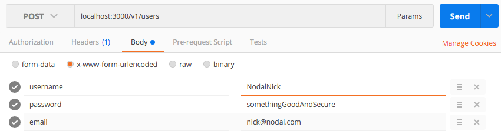
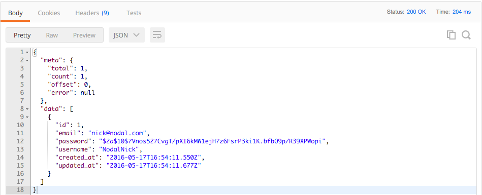
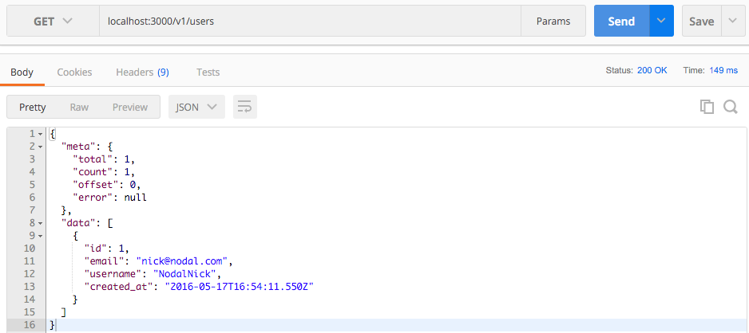
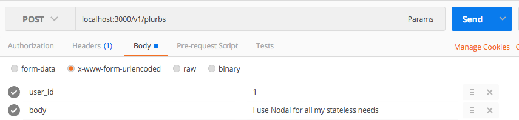

TL;DR Nodal API: Twitter
A simple walkthrough on how to get a Nodal API1 that can service any messaging client via HTTP.
Pre-reqs:
- Nodal requires Node ^v5.0.0 to run
- A server running postgres (postgresapp.com)
TIPs:
- Postman is used for testing API endpoints
- "Plurb" refers to "Tweet"
Server Setup
In your bash shell
$ npm install -g nodal $ nodal new pluribus $ cd pluribus
Nodal serves on port 3000 of your localhost by default
$ nodal s
Database Setup
User Model
Open up a new tab
$ nodal g:model --user
$ nodal g:controller v1 --for Users
$ nodal db:create
$ nodal db:prepare
$ nodal db:migrate
There now exists a /v1/users API endpoint.
Before testing it, create a user with an HTTP post request:
 The expected default HTTP response:

However, you can customize the API response by modifying the appropriate model controller:
class V1UsersController extends Nodal.Controller {
index() {
User.query()
.where(this.params.query)
.end((err, models) => {
this.respond(err || models, [‘id’,’email’,’username’,’created_at’]);
});
}
}
Which will now return the following response:

Tweet Model
$ nodal g:model Tweet user_id:int body:string $ nodal g:controller v1 --for Tweets $ nodal db:migrate
User-Tweet Relationship
Before checking the API endpoints, we need to explicitly define the relationship between a tweet and its user within the tweet model:
module.exports = (function() {
‘use strict’;
const Nodal = require(‘nodal’);
const User = Nodal.require(‘app/models/user.js’);
class Tweet extends Nodal.Model {}
Tweet.joinsTo(User, {multiple: true});
Tweet.setDatabase(Nodal.require(‘db/main.js’));
Tweet.setSchema(Nodal.my.Schema.models.Tweet);
return Tweet;
})();
Update the tweet controller to reflect the relationship in API responses:
class V1PlurbsController extends Nodal.Controller {
index() {
Tweet.query()
.join(‘user’)
.where(this.params.query)
.end((err, models) => {
this.respond(err || models, [‘id’,’body’,’created_at’,{user: [‘username’,’email’,’created_at’]}]);
});
}
}
Tweet posts:
 We now have an extensible Nodal API service for handling a twitter client.
For the motivation behind Nodal ↩